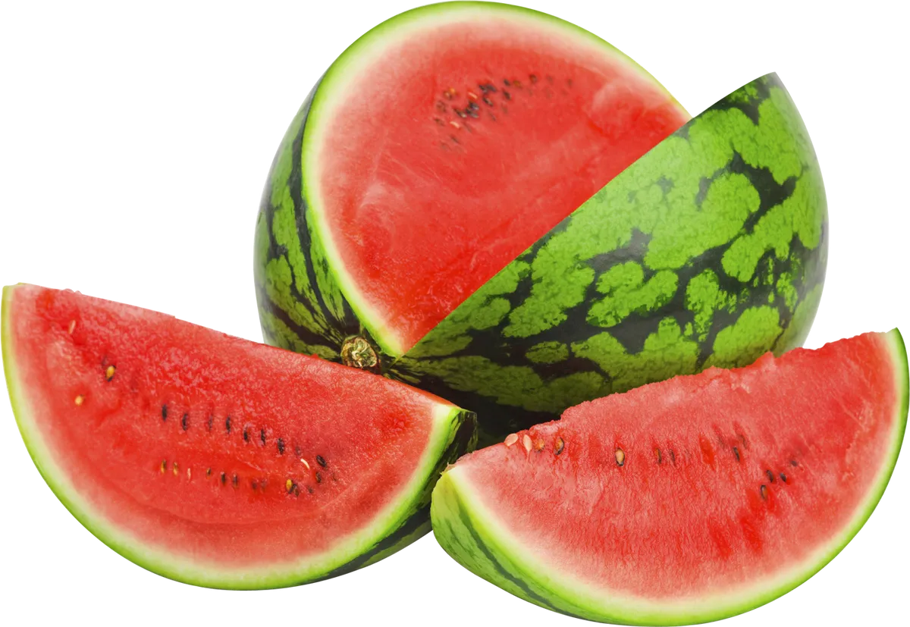
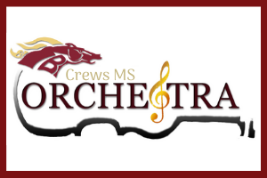

Crews Chronicles
The spiciest brew of news available!
Smaran TimsinaCost: 0.75₵September 8th 2022
New Principal Immediately Fired
Because the departure of Alton C. Crews Middle School's previous principal has left to guide the local High School. A new principal has taken their place. However, just seconds ago, they were fired from her new occupation. It was today, August 26th, 2022, at around 1:00 pm when they were fired from the spot by the board of education. This temporary principal was fired because they were caught harassing and pressuring a child to do a stunt although it was against the child's will. An irony to the school's No Place for Hate club.
A new addition to the School's Lunch Menu: Watermelon Pizza 
The lunch ladies prepared a meal that everyone was not expecting whatsoever. Watermelon Pizza. During the 2021-2022 year at crews middle school they had claimed that they were working towards incorporating watermelons in most meals, so that must have been hinting towards this development. They disclosed this information on August 25th, 2022, announcing that with this more watermelon-infused foods were to come. They have started using watermelons given the nutrition in them.
Crews Expands their international vocabulary
Crews middle school recently added three more language classes: German, French, and Chinese. They added these languages last week, in addition to their Spanish class which was already there for a long time. They supplemented these three classes into crews' global vocabulary so that students experience and learn about the language and culture of their respective countries the language inherits from.
Kendall Orchestra Audition Results: 
Many in 7th and 8th grade that take orchestra have auditioned for the Kendall (County) Orchestra on Saturday, August 27th, 2022. Many of these students have shown excellence in their skills to play their instrument, but however only a selected few met or surpass the level of mastery the judges are to expect. A round of applause to the following students: Noah Kebede from 7th grade - violin, Liam Walker from 8th grade - viola, and last but not least, Viktor Winfree from 7th grade - bass. Because of their results, these students have met and exceeded the level the judges were asking for, meaning these students have shown a level of mastery that is something all of us at crews should be proud of.